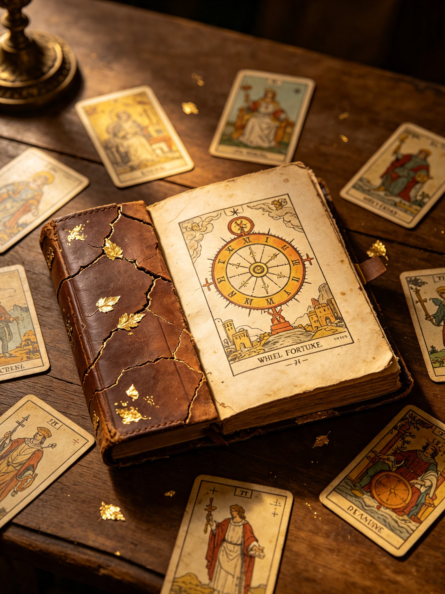

📜 History of Tarot: From Origins to Modern Tradition
Many myths surround the origins of Tarot — some claim it comes from ancient Egypt, lost temples or distant lands — but historical evidence points clearly to northern Italy, around the year 1430. It began not as a mystical tool, but as a popular card game called tarocci, played by nobles, merchants and wealthy families across cities like Milan, Ferrara and Florence.

These early decks were hand‑painted luxury items, often gifted between rulers and used for entertainment, strategy and social gatherings. They had no link to fortune‑telling — their symbols represented virtues, vices, astrological signs and familiar scenes of human life.
By the 16th century the game spread to France, Germany and Switzerland, where it became known as tarot. It was during the 18th century that scholars and mystics began to see more than just a game: Antoine Court de Gébelin and Jean‑Baptiste Alliette (known as Etteilla) linked its imagery to ancient wisdom, Kabbalah, alchemy and celestial movements. For the first time, Tarot was framed as a mirror of the universe and the human soul.
In the late 19th and early 20th centuries, secret societies like the Hermetic Order of the Golden Dawn deepened this connection, assigning precise meanings, elemental correspondences and structured interpretations to every card. It was this rich period of study that led directly to the creation of the Rider–Waite–Smith deck — the version we preserve and use here at MyTarot.Day.
Today, Tarot is no longer reserved for scholars or initiates. It has evolved into a gentle, powerful instrument for self‑reflection, helping millions around the world understand their own emotions, choices and paths — always rooted in centuries of tradition, yet always fresh for every new reading.